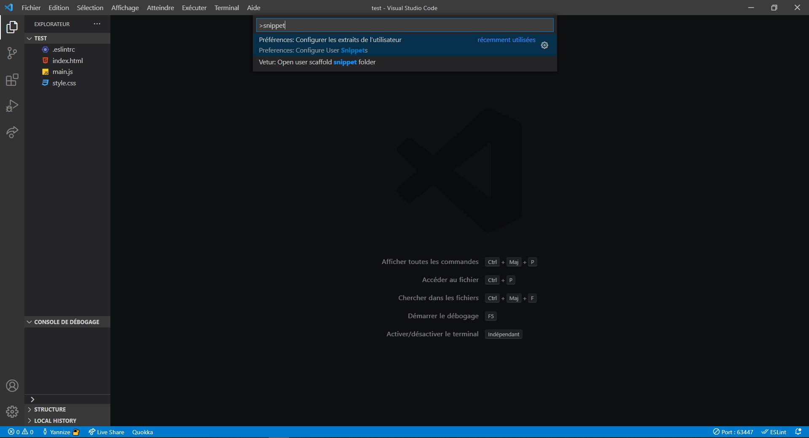
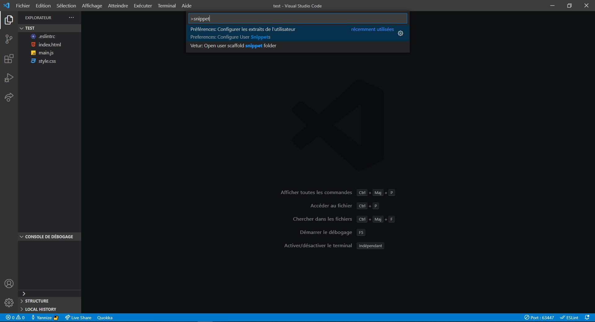
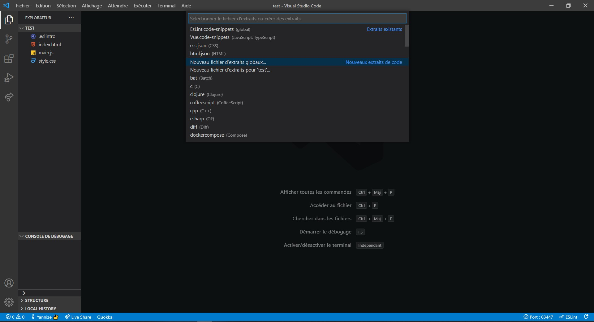
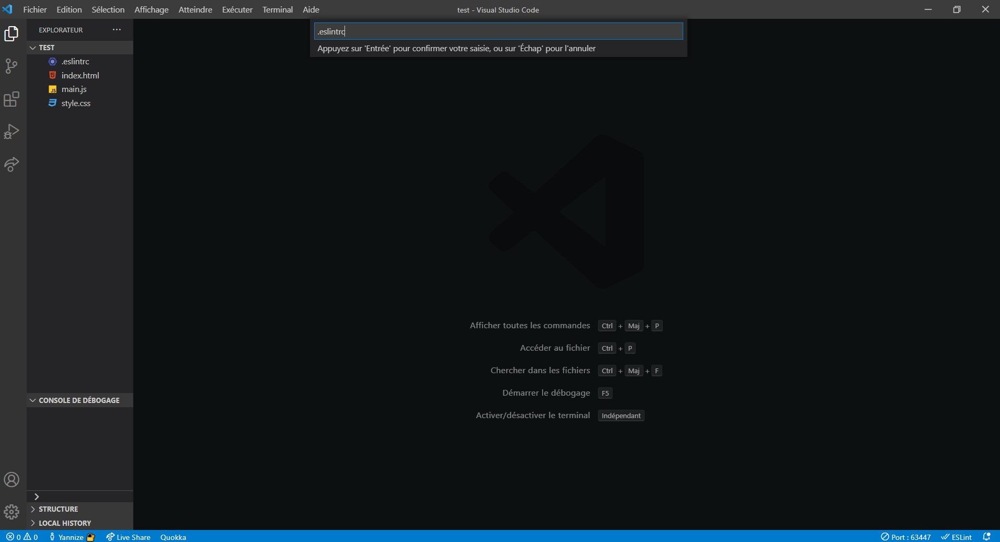
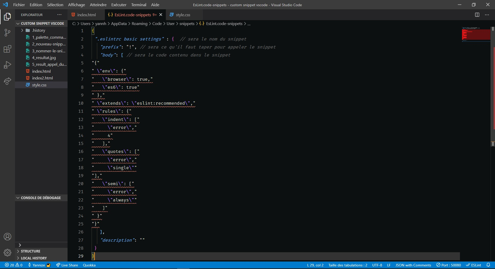
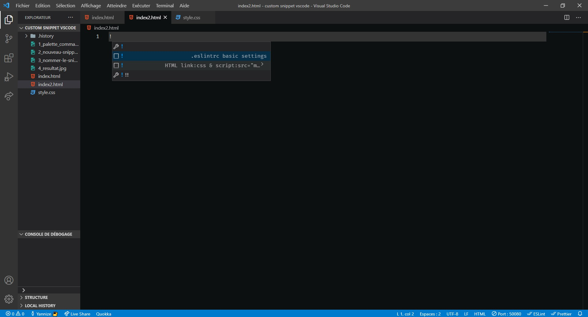

Ctrl + Shift + P pour ouvrir la palette de commande
et écrire : snippet
Ctrl + Shift + P pour ouvrir la palette de commande
et écrire : snippet
sélectionner Nouveau fichier d'extraits globaux...
Lui donner un nom à ce fichier (peut importe le nom, avec ou sans ' .' devant
Supprimez tout le contenu par défaut de la nouvelle page et copiez/coller la totalité de ces lignes à la place :
{
".eslintrc basic settings" : {
"prefix": "!",
"body": [
"{"
" \"env\": {"
" \"browser\": true,"
" \"es6\": true"
" },"
" \"extends\": \"eslint:recommended\","
" \"rules\": {"
" \"indent\": ["
" \"error\","
" 4"
" ],"
" \"quotes\": ["
" \"error\","
" \"single\""
"],"
" \"semi\": ["
" \"error\","
" \"always\""
" ]"
" }"
"}"
],
"description": ""
}
}
Le resultat final qu'il faut avoir dans le fichier (les commentaires sont juste pour vous indiquer ce que vous pouvez modifier si vous voulez mettre votre propre appelation et raccourcis)
Il y'a plus qu'à sauvegarder (si auto-save est desactivé) et quitter l'onglet. Puis tester en tapant '!' et selectionner
! .eslint basic settings
